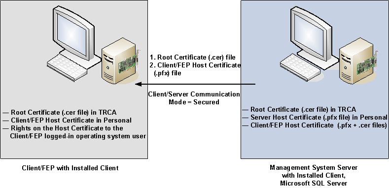

Client/Server
A Desigo CC installation has only one server, but it can have multiple clients, running on different computers. You can work with Desigo CC in configuration where a Desigo CC server communicates with multiple Desigo CC clients installed on separate computers. This allows multiple operators to manage and supervise the same site.
The communication between the client and the server must be set up using the SMC. First, you must set up the server and then the client station. The communication should be secured using certificates (this might be simplified on dedicated and protected networks, such as within a control room).
By default, the template project is created for a stand-alone configuration (with the indication that no communication is possible). To set up a secured/unsecured client/server system, you must edit the project.
Server Station
A dedicated workstation with the following features:
- Desigo CC server
- Own administration
- Microsoft SQL installed/remote customer MS SQL
- Own network segment
- IPv4/IPv6
- IT firewalls must allow communication between server and client
Client Station
A dedicated workstation with the following features:
- Desigo CC client/FEP
- Own administration
- IPv4/IPv6
- Internal firewalls
Security
- Secure client/server deployments require medium configuration setup.
Certificate Usage
This scenario explains setting up a secured client/server communication using certificates from the Windows store.
For a client/server deployment, the following restrictions apply with respect to certificates:
- The root certificate identifies the source of certificates used for communication. Therefore, they must be the same for all host certificates and must be available to the server and all clients.
- The root and communication (host) certificates must be different and have different subject names.
- The communication certificates should be specific. Therefore, it is recommended to use different host certificates for client and server.
- The communication certificates are used by the Desigo CC client/FEP. Therefore, the logged-on user of the client/FEP operating system requires access to the private key of the host certificate stored in the Windows Certificate store.
- If a remote FEP is connected to the Server, it must have the same Windows key file is available in the Windows Key Store.

The owner of the Desigo CC system is responsible for distributing authorized certificates and keys. This is often done by the IT infrastructure, particularly, if commercial certificates are used instead of the self-signed ones.
Deployment Diagram
